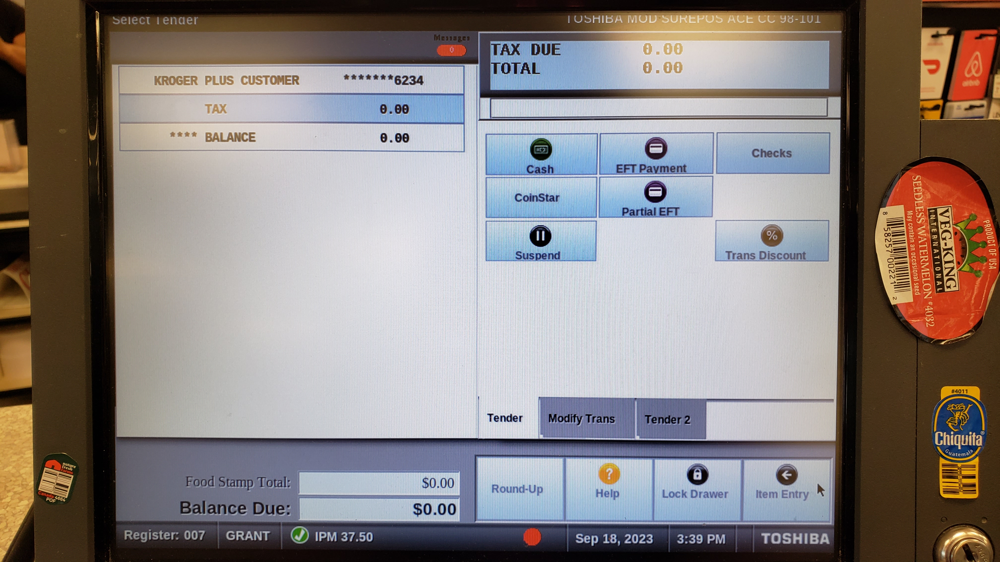
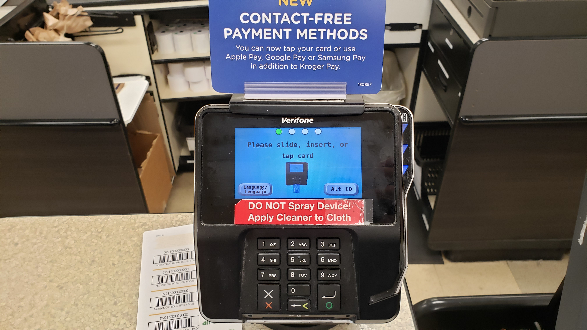
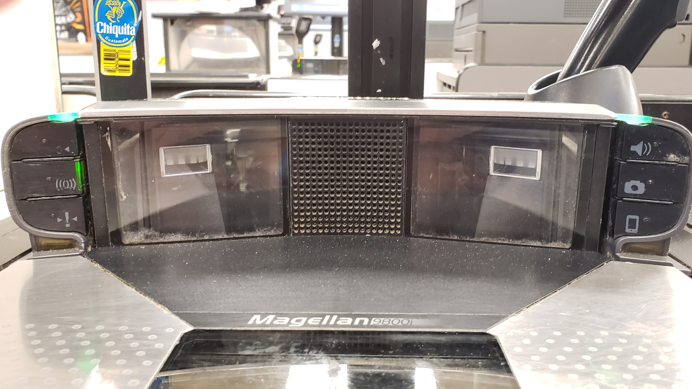

Part 2
Advanced Topics
Troubleshooting

As a cashier you are not always going to have backup for solving problems. Sometimes your managers and coworkers are going to be busy or your going to be working alone. In those cases, you need to be prepared to solve customer problems and technical issues. This part of the guide is going to expect some familiarity with the software and terms so get ready.
This will be ordered by my personal ranking of importance.
Payment Issues
Unfortunately, many customers are pretty clueless even when it comes to using their own stuff. This especially applies to payment.
Credit vs Debit
One common confusion is the difference in functionality of credit and debit cards.
Both require the EFT payment option. However, most credit cards will not allow for cashback and there are some differences in processing payments.
When a customer inserts their card, it will prompt for if they want cashback, if the card is able to provide it. If it does not display this prompt, it simply cannot provide cashback. Furthermore, some credit cards will charge a cashback fee which the customer will be prompted to accept.
The final action of payment is different for credit and debit. For most debit cards, a pin must be entered. For most credit cards, the pin is not needed, and the customer can simply hit the green button.
If a customer has issues with a card that is supposed to give cashback or that doesn't actually require pin entry, there really isn't anything you can do, so try an alternate method of payment or suspend the transaction so they can talk to their card provider.
Chip Malfunction
Chip malfunction is by far the most common issue we have, but thankfully one of the easiest to solve.
When encountered check:
- Does the card have a chip?
- Is the customer inserting it the right way?
- Is the card clean? Try rubbing it with a cloth to get any icky stuff off the card.
- Some cards need to be swiped. After three failed chip uses, try to swipe the card. Use an appropriate speed and orientation when swiping.
- Does the card have NFC (popularly "Tap") capabilities denoted by a wifi-looking sign on the card? If so try that if the chip persists in not working.
If all else fails, and you have tried a number of times, try switching registers and using a different pinpad. If even that doesn't work, try an alternative method of payment.
Card Canceled
Sometimes the card cancels when the customer takes it out too soon or hits the red button. This can be deceiving for them since it will make the happy beep as if the transaction went through, which in fact it did not. It will prompt on your register screen that the payment was canceled at the pinpad, so it is easy to diagnose.
Card Declined
A decline is not to be confused with a chip malfunction or cancel. There are a few different error messages that display when cards decline, but all of them contain "decline" and all of them mean one thing: for whatever reason the card is out of funds. If a card declines there is nothing we can do.
Some foodstamp kindof cards will decline if you try to pay for more than they contain, but those typically print something out of the receipt printer to tell you their amount. You can then try the card again using Partial EFT for that amount and it should work.
Instacart Woes
Dealing with Instacart problems can be some of the most difficult since usually mistakes are costly. Lets go over a few:
- Scanning the barcode/s before you scan anything else is ABSOLUTELY REQUIRED NO EXCEPTIONS. If it is early in the order, void the transaction and restart the order. If the order is almost complete you will have to restart nonetheless.
- Make sure your using the right payment option. Some Instacart orders use an EFT card and some use Online Pay.
- You ended the order too early or missed an item, what now? Unfortunately, the Instacarter is going to have to contact the company and arrange for another order. Always make sure to check under the cart and confirm with the shopper that the order is completely finished before processing payment.
- If the customer is having issues with how Instacart works and shopping for items, first and foremost this is not your forte nor is this your problem. It is up to them to do this themselves. If you can help them figure small stuff out or connect to wifi or other simple things, then do so, but don't do their job for them.
The Infamous Check Pin-Pad Error
Many times when a customer tries to pay for an order, the pin-pad will freeze and will say "check Pin Pad" on the register. When this happens, you are going to need to suspend the order and have the customer pay for their order at another register.
You can keep scanning items like normal and the customer won't get charged twice, but the pin pad will be completely useless. So, how do you fix it?
Once you've taken care of all the customers, you can do two things:
- Turn off the register from the button on the main computer. This will reboot everything connected to the register, including the pin pad.
- I generally do not recommend this option. Do not do this without manager consent since we aren't technically meant to know about this. If you press "1" + "5" + "9" on the pinpad, it will open the pinpad's debug menu. Follow the prompts to exit the menu. Sign off the register and wait a bit for the pinpad to reboot, and it should be back to normal.
Fixing a Frozen Register
Sometimes though, not just the pin-pad breaks: the whole thing does. In this case you might have no way to suspend the transaction. In this case you need to transfer the order from another register and finish it there. Note: you will need someone else to help you with this since if you sign in on a second register, it will void the order and waste all your work.
Once the customer has been taken care of, reboot the register.
Working with the Scale
The scale is one of the most confusing things to troubleshoot as a cashier since it doesn't always work as intended. To tell if the scale is active, the weight field on the secondary customer display should say 0.00 rather than being blank. Pressing the top left button on the scale is supposed to refresh this, but often it doesn't work. Often the best thing to do if the scale isn't working is to just keep trying and to give it some time.
The Kroger App
As a cashier you need to know how to navigate the Kroger App, since none of the customers know how to. It can be downloaded on Android and iOS but it is also notable that the website can be used for a lot of stuff instead, so if a customer doesn't have a phone, it's not the end of the world.
The Home Page
From the home page of the Kroger App you can conveniently access a lot of subfeatures of the app, as well as recommended coupons and items. At the top is a search bar for items, a barcode icon which can be used to go to item pages or scan digital coupons by scanning barcodes with your phone's camera. Below this are Kroger Pay, prior order information, etc., and even lower are the recommended stuff. At the top of the page too there is a three lined icon that gives us a bunch more options, let's check it out.
The Home Page: Sidebar
On the side-bar, we'll just look at what's useful for cashiers to need to know.
- Rewards - Check the user's fuel point balance.
- Kroger Pay - As one would imagine: opens Kroger Pay
- My Account - Check the attached phone number, reset password, etc.
- Plus Card - Scan a plus card barcode
- Purchase History - View prior order information
The Savings Page
At the bottom of all the pages there is a useful navigation bar. There are a lot of options.
- Home - As we discussed
- Weekly Ads - This is useful for finding week exclusive digital deals.
- Savings - View all sorts of digiatl coupons
The middle option is the most useful for helping customers: savings. To access everything hit "view all coupons."
Viewing Digital Coupons
There are three sections and all are pretty useful.
- All Coupons - Gives the user a bunch of recommended digital coupons, useful for quickly finding popular coupons.
- Browse - Search for coupons by name
- Clipped - View any clipped coupons. This can be incredibly useful in troubleshooting issues with digital coupons. If a coupon is there but isn't coming off an order, maybe the customer hasn't met the requirements. If the coupon isn't there, maybe the customer already used it, or just hasn't clipped it yet.